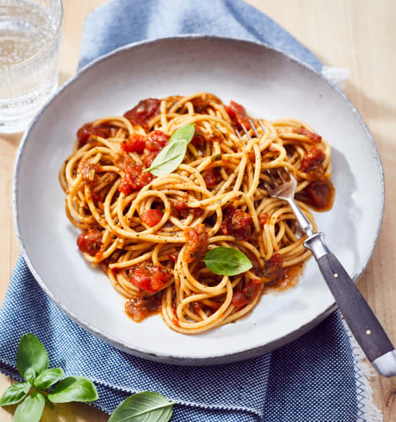

Spaghetti

Description
Easy weeknight friendly spaghetti and meat sauce that’s made completely from scratch. Use ground beef, turkey, pork, chicken or lamb to make this simple spaghetti recipe.
Ingredients
- 1 pound spaghetti
- 2 pounds lean ground beef
- 1 onion, minced
- 1 can tomato paste (6 ounce)
- 2 cans condensed tomato soup (10.75 ounce)
- 2.5 cups water
Steps
- Bring a large pot of lightly salted water to a boil. Add pasta and cook for 8 to 10 minutes or until al dente; drain.
- In a large skillet over medium heat, cook ground beef with onion until meat is brown. Drain. Return meat mixture to pan with tomato paste, tomato soup and water. Cook, stirring, until heated through and thickened, 5 to 15 minutes. Serve over cooked pasta.